Generated from the current design documents (2026-11-04, decisions 1-168) by genera_diagrammi.py. Vector SVGs: open and edit in Illustrator / Figma / Inkscape. Overall diagram: red = inputs, blue = outputs, green = modules with controls, grey = passive blocks. Module diagrams: red = audio, dashed blue = control, purple = feedback and highlighted notes, amber = open or provisional items. Versione italiana
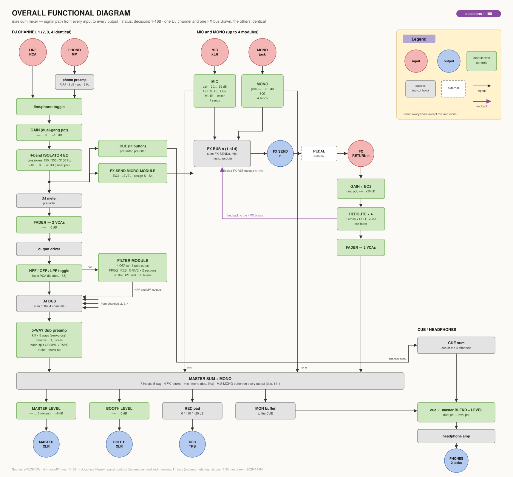
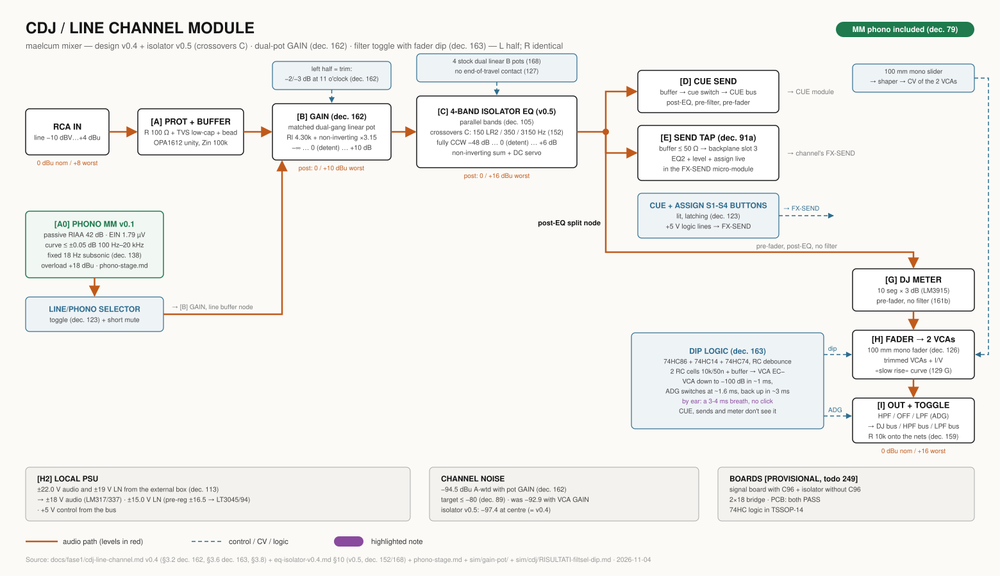
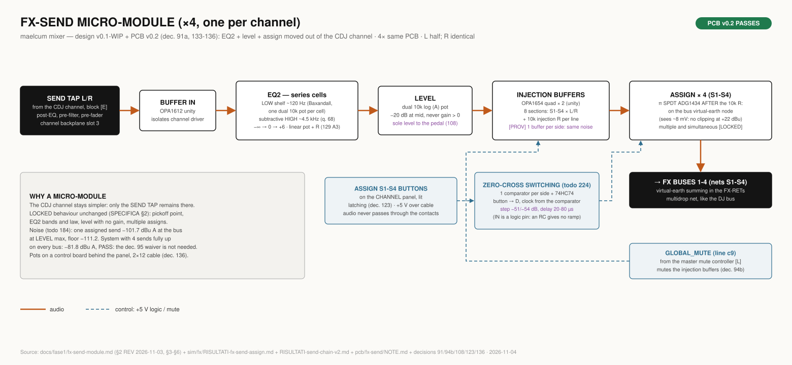
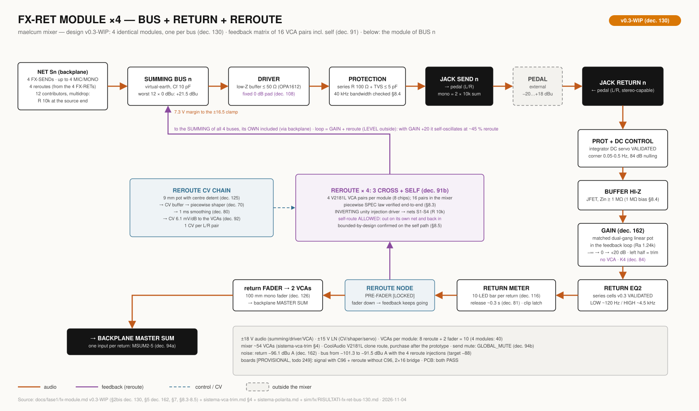
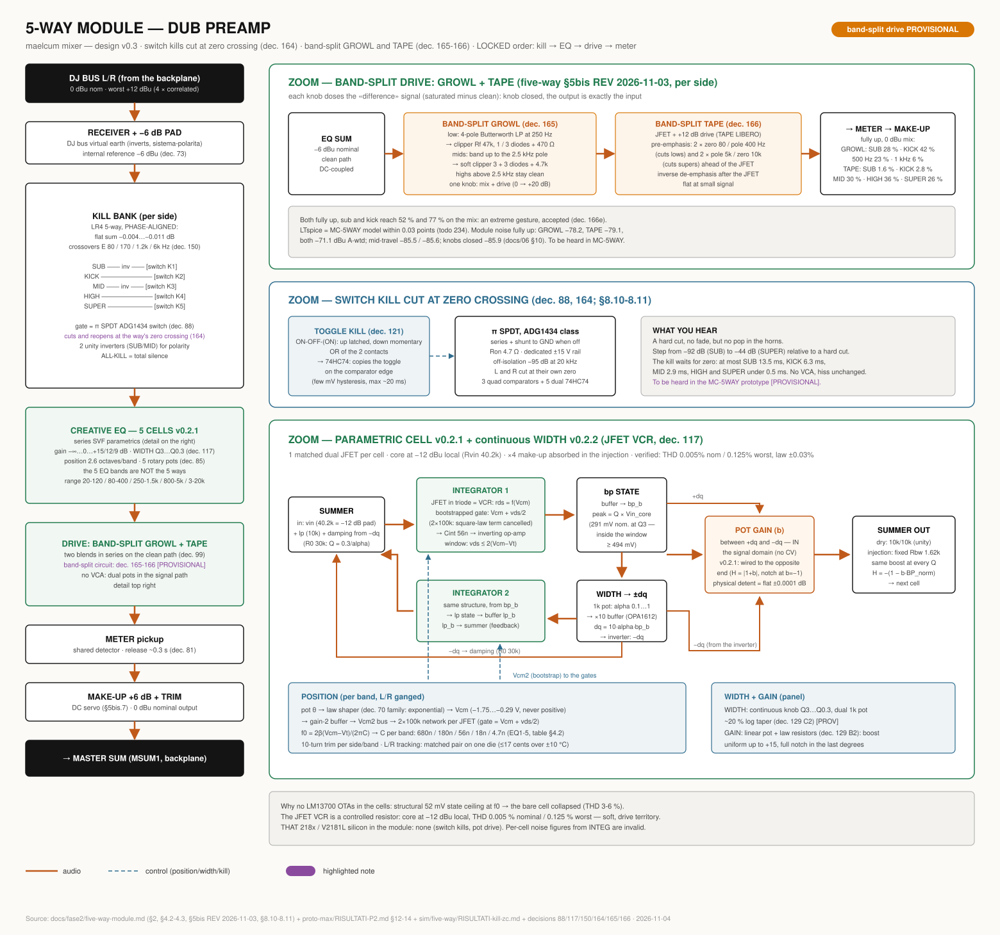
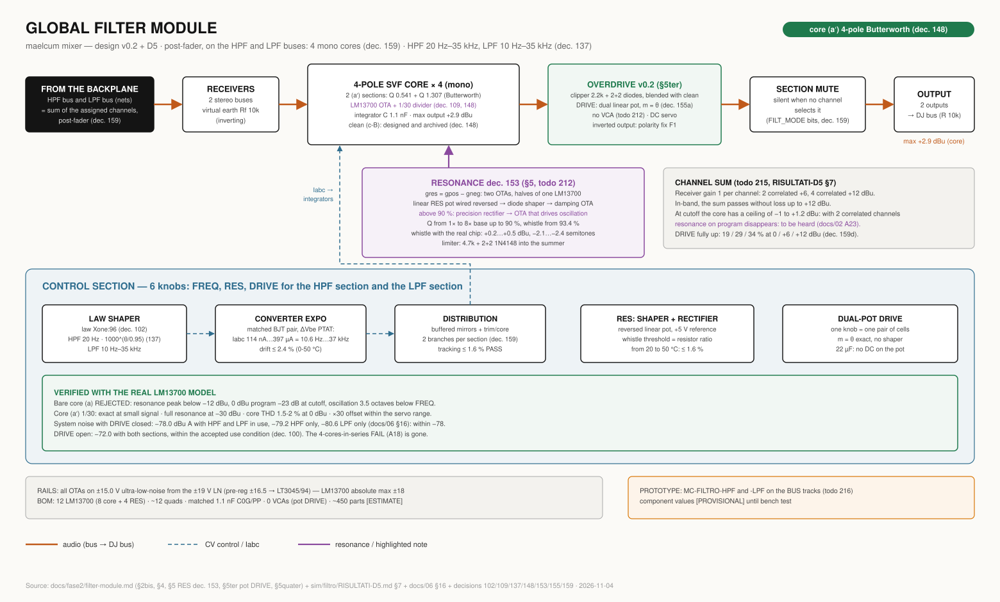
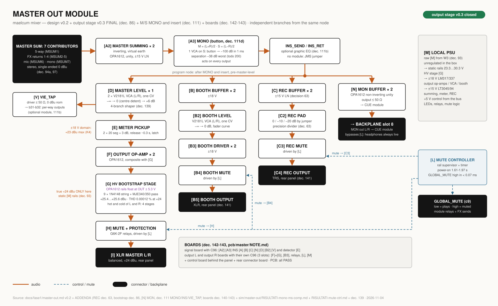
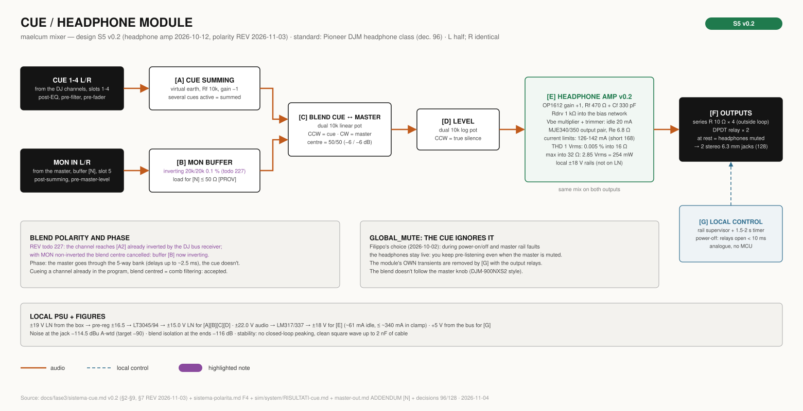
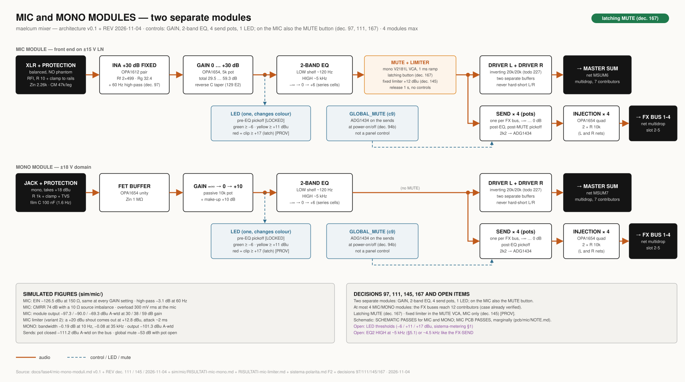
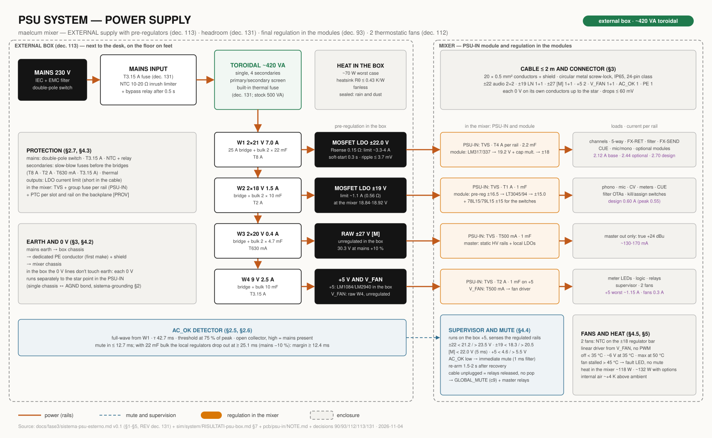
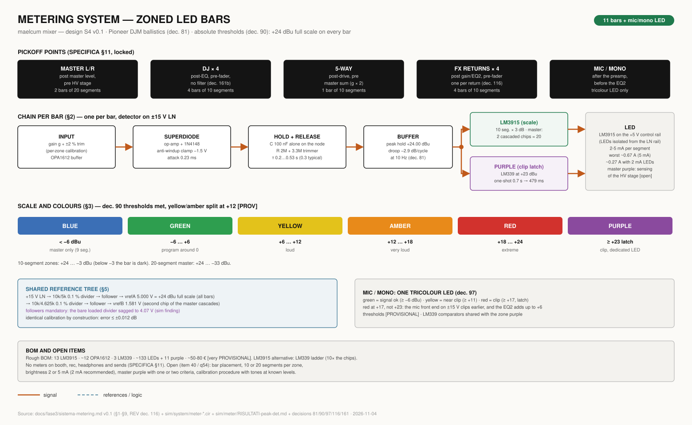